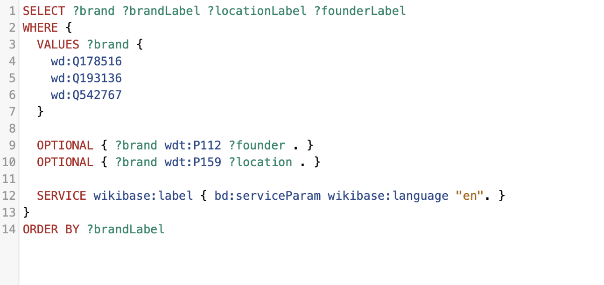

SPARQL Queries
and LLM Prompts
This section documents the SPARQL queries and LLM prompts used to extract, verify, and enrich information about luxury fashion brands (Gucci, Prada, Dior) in Wikidata. We combined structured querying with intelligent prompting to identify gaps and generate insights.

Here are the demonstrations of each mandatory SPARQL keyword: OPTIONAL, DISTINCT, UNION, FILTER, REGEX, LIMIT, and ORDER BY.
1️⃣ OPTIONAL: Brands, Location, and Founder
Purpose: Uses OPTIONAL to retrieve brands and their founding locations, optionally including the founder's name. This ensures that even if a founder isn't linked, the brand and its location are still included, providing a comprehensive list.
üìé Link to Wikidata Query Service Results for Query 1
2️⃣ DISTINCT: Unique Countries of Headquarters
Purpose: Uses DISTINCT to illustrate how to get a unique list of countries where these brands' headquarters are located, preventing duplicate entries for countries shared by multiple brands.

üìé Link to Wikidata Query Service Results for Query 2
3️⃣ UNION: Associated People for Gucci or Prada
Purpose: Employs UNION to combine results from different relationship types (founder, creative director, general member) to find all people associated with Gucci or Prada, regardless of their specific role.
üìé Link to Wikidata Query Service Results for Query 3
4️⃣ FILTER & REGEX: Gucci Silk Clothing Items
Purpose: This query expertly combines FILTER and REGEX to narrow down results. It first identifies items classified as "clothing" that are associated with "Gucci" (using REGEX on the label). Then, it further refines these results, ensuring that the item's label or its description also contains the word "silk" (using another REGEX with case-insensitivity). This dual filtering allows for highly specific data extraction based on both semantic type and textual patterns.

üìé Link to Wikidata Query Service Results for Query 4
5️⃣ LIMIT: Top 5 Common Item Types
Purpose: This query leverages the LIMIT keyword to rank Gucci, Prada, and Dior based on the number of distinct fashion collections they have documented on Wikidata. By counting and ordering these collections, it provides insight into which brand has the most extensive public record of its creative outputs, offering a robust example of LIMIT applied directly to our topic brands.

üìé Link to Wikidata Query Service Results for Query 5
6️⃣ ORDER BY: Brands by Name
Purpose: Uses ORDER BY to sort the results by the brand's name (?brandLabel) in ascending alphabetical order, providing a structured and easily consumable list.